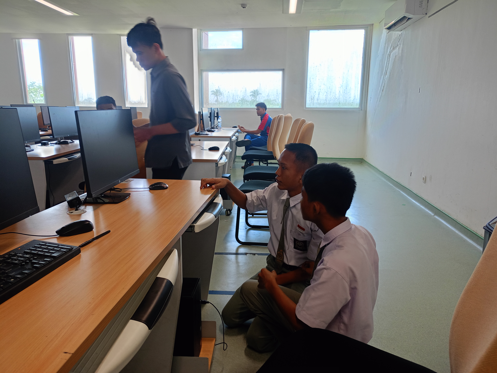
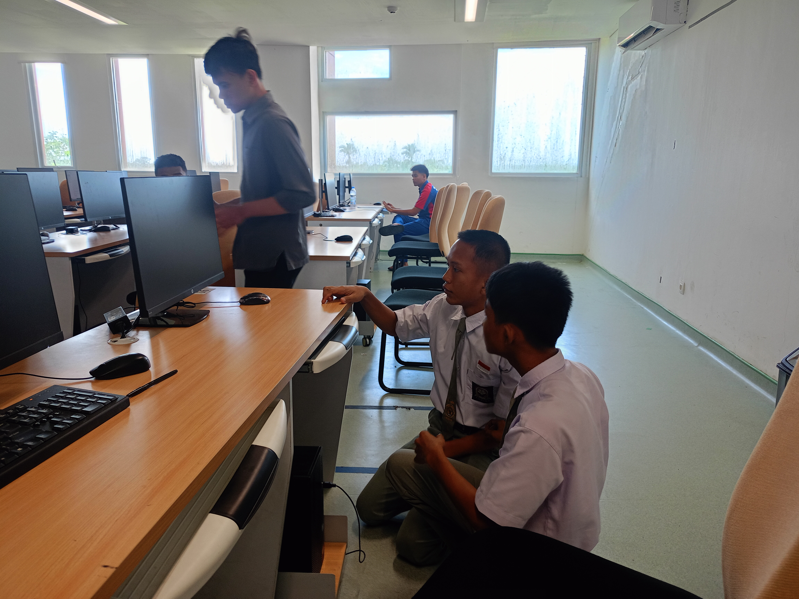

Daftar Kegiatan PKL
1. Pengecekan Spesifikasi Komputer Lab di UINSU

 


Salah satu kegiatan yang kami lakukan selama pelaksanaan Praktik
Kerja Lapangan (PKL) adalah melakukan pengecekan dan pendataan
spesifikasi komputer yang digunakan di laboratorium UINSU. Tujuan
dari kegiatan ini adalah untuk memastikan bahwa perangkat yang
tersedia masih layak digunakan, sesuai dengan kebutuhan operasional,
serta mendukung proses pembelajaran dan kerja di lingkungan
kampus.
Dalam proses pengecekan, kami mencatat informasi teknis dari setiap
unit komputer, seperti:
- Jenis dan kecepatan prosesor (CPU)
- Kapasitas RAM
- Tipe dan ukuran penyimpanan (HDD/SSD)
- Sistem operasi yang digunakan
- Kondisi fisik perangkat dan periferal (monitor, keyboard,
mouse)
- Ketersediaan koneksi jaringan dan software pendukung
Kami menggunakan tools bawaan sistem seperti System Information,
dxdiag, dan Device Manager untuk mendapatkan data spesifikasi secara
akurat. Selain itu, kami juga melakukan dokumentasi visual terhadap
perangkat yang dicek, serta mencatat jika ditemukan kendala seperti
performa lambat, kerusakan hardware, atau software yang perlu
diperbarui.
Kegiatan ini memberikan kami pengalaman langsung dalam proses audit
perangkat keras, sekaligus memperkuat pemahaman kami tentang
komponen komputer, troubleshooting dasar, dan pentingnya dokumentasi
teknis dalam dunia kerja.
2. Pengecekan Jaringan Switch di UINSU
Selama pelaksanaan Praktik Kerja Lapangan (PKL) di PUSTIPADA UINSU, kami mendapatkan tugas untuk melakukan pengecekan dan dokumentasi terhadap perangkat switch jaringan yang tersebar di berbagai gedung Universitas Islam Negeri Sumatera Utara (UINSU). Kegiatan ini bertujuan untuk memastikan bahwa konektivitas jaringan antar ruangan dan antar gedung berjalan dengan baik, stabil, dan sesuai standar teknis yang ditetapkan. Kami melakukan inspeksi langsung ke setiap lokasi yang memiliki perangkat switch, mulai dari gedung rektorat, fakultas, laboratorium, hingga ruang administrasi.
3. Reset Password dan Instalasi Ulang Windows di UINSU


Dalam rangka mendukung pemeliharaan perangkat komputer di lingkungan
kerja, kami mendapatkan tugas untuk melakukan proses reset password
Windows serta instalasi ulang sistem operasi pada beberapa unit
komputer yang mengalami kendala akses atau performa.
Langkah pertama yang kami lakukan adalah menyiapkan USB installer
Windows menggunakan tool seperti Rufus dan file ISO resmi dari
Microsoft. Setelah USB installer siap, kami melakukan booting ke
mode instalasi melalui BIOS dan memilih opsi Repair your computer
untuk mengakses fitur pemulihan sistem.
Untuk mereset password, kami menggunakan metode pemulihan lokal
dengan mengganti file sistem tertentu agar dapat mengakses Command
Prompt sebelum login. Melalui perintah net user, kami berhasil
mengatur ulang password akun pengguna yang terkunci.
Setelah proses reset selesai, kami juga melakukan instalasi ulang
Windows pada perangkat yang mengalami kerusakan sistem atau performa
lambat. Proses ini meliputi:
- Partisi ulang dan format drive
- Instalasi sistem operasi Windows
- Pengaturan awal dan aktivasi
- Instalasi driver dan software pendukung
Kegiatan ini memberikan kami pengalaman langsung dalam menangani
masalah sistem operasi, memahami struktur booting dan recovery
Windows, serta meningkatkan kemampuan teknis dalam pemeliharaan
perangkat komputer.
4. Pengecekan dan Perbaikan Kabel LAN CCTV di UINSU
Dalam kegiatan PKL, kami turut berperan dalam proses pengecekan dan
perbaikan kabel LAN yang digunakan untuk sistem CCTV di lingkungan
kerja. Tugas ini bertujuan untuk memastikan koneksi antar perangkat
CCTV berjalan stabil dan tidak mengalami gangguan jaringan.
Langkah awal yang kami lakukan adalah memeriksa jalur
kabel LAN secara fisik, termasuk kondisi kabel, posisi pemasangan,
dan konektor yang terhubung ke perangkat DVR atau NVR. Kami mencatat
jika ada kabel yang longgar, terkelupas, atau tidak berfungsi
sebagaimana mestinya.
Jika ditemukan kerusakan, kami melakukan perbaikan
dengan cara mengganti ujung kabel dan melakukan proses clipping
ulang konektor RJ45. Proses ini meliputi pemotongan kabel,
pengupasan pelindung, penyusunan urutan kabel sesuai standar T568B,
dan penjepitan menggunakan crimping tool.
Setelah proses clipping selesai, kami menggunakan LAN
tester untuk memastikan koneksi sudah aktif dan stabil. Kegiatan ini
memberikan kami pengalaman langsung dalam instalasi dan perbaikan
jaringan fisik, serta memperkuat pemahaman tentang struktur kabel
UTP dan standar koneksi jaringan CCTV.